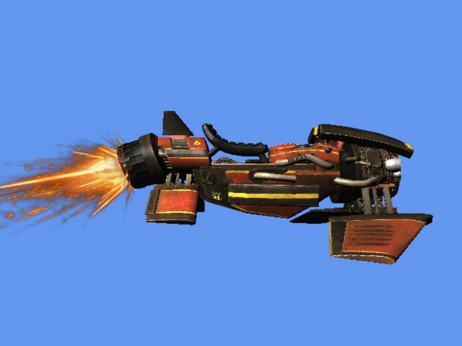
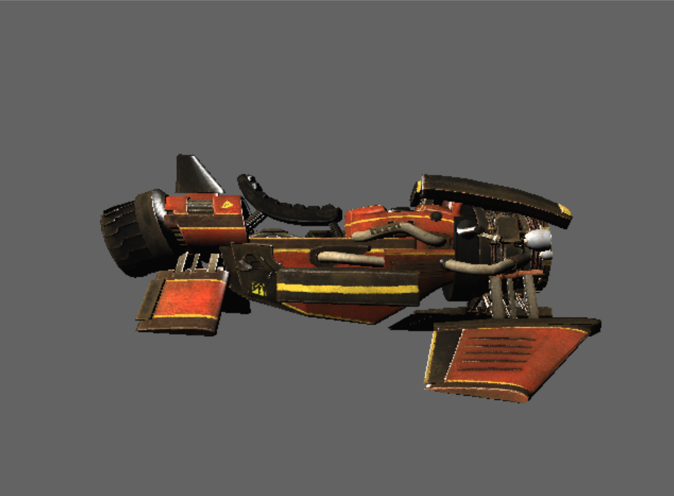

Dual Rasterizer

Overview
The dual rasterizer project allows users to switch between software rasterizing and DirectX11 rendering. Created for the Graphics Programming course @ DAE, it familiarized us with rasterization and the DirectX APIs.
Features
General
- Dual Rendering Modes: Toggle between DirectX and Software rendering modes.
- Mesh Rotation: Enable or disable rotation of the mesh.
- Rendering State Notifications: Console messages indicate the current state or mode after each control is triggered.
DirectX (Hardware) Mode
- FireFX Mesh: Toggle the FireFX mesh.
- Sample States: Cycle through different sample states (point, linear, anisotropic).
- Cull Modes: Cycle through backface, frontface, and no culling.
- Uniform ClearColor: Toggle the use of a uniform clear color.
- FPS Printing: Toggle the display of FPS (frames per second).
Software Mode
- Linear Filtering: Enable linear filtering.
- Shading Modes: Cycle through different shading modes (Observed Area, Diffuse, Specular, Combined).
- NormalMap Usage: Toggle the usage of NormalMap.
- DepthBuffer Visualization: Toggle visualization of the depth buffer.
- BoundingBox Visualization: Toggle visualization of the bounding box.
- Cull Modes: Cycle through backface, frontface, and no culling.
- Uniform ClearColor: Toggle the use of a uniform clear color.
- FPS Printing: Toggle the display of FPS (frames per second).
Controls
- F1: Toggle between DirectX and Software rendering modes.
- F2: Enable/Disable Mesh Rotation.
- F3: Toggle FireFX mesh (Hardware mode only).
- F4: Cycle through Sample States for rendering (Anisotropic is Hardware mode only).
- F5: Cycle through Shading modes for rendering (Software mode only).
- F6: Toggle NormalMap usage (Software mode only).
- F7: Toggle DepthBuffer Visualization (Software mode only).
- F8: Toggle BoundingBox Visualization (Software mode only).
- F9: Cycle through Cull modes (backface, frontface, none).
- F10: Toggle the use of Uniform ClearColor.
- F11: Toggle FPS Printing.
Technologies Used
Screenshots
DirectX output

Software output